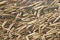

periphyton

Definition: Periphyton is a complex mixture of algae, cyanobacteria, heterotrophic microbes, and detritus that is attached to submerged surfaces in most aquatic ecosystems. The related term Aufwuchs (German "surface growth" or "overgrowth") refers to the collection of small animals and plants that adhere to open surfaces in aquatic environments, such as parts of rooted plants.
Source: Wikipedia
Wikipedia Page
Wikidata Page